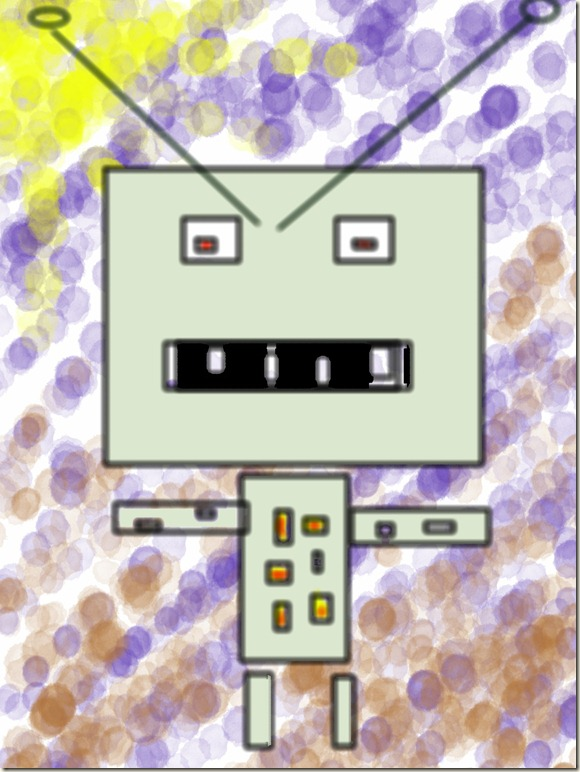

Friday the Thirteenth, the Night Before Valentine’s


{kind=link}
{kind=link}
{kind=link}
It was a safe and happy day. I told myself that. I told myself again. The sun was too bright. Birds moved in the air. Tomorrow was Valentine’s Day. Today was Friday the 13th. I wore my red scarf.
The sidewalks crumbled under the salt. My boots caught on edges. I watched the cracks.
A black cat crossed my path. Its nose twitched. Kibbles ‘n Bits, I guessed. I looked away. It stared anyway.
My lowly Android buzzed. A number I did not know. I picked it up.
“I see you,” the message read.
I laughed. Too loud. My voice small and shaky. The streets were quiet. Too quiet.
Store windows pulsed with red hearts. I told myself it was the sun.
At the dorm, my laptop glowed. It showed me. Sitting at my desk. Alone.
I set my bag down. My hands shook.
The cat sat on the windowsill. Silent. Relief.
Then it spoke.
“I thought… you were Kibbles ‘n Bits,” it said.
Its eyes glimmered. Its smile stretched wide. Too wide.
“Now you’re mine,” it added.
I stumbled back. Bag fell. I could not move.
Note: Another robot fiction experiment. I asked the robots to write a story in the style of someone in my college class then added in some weird ideas and changed it to Hemingway.
Related posts

Nightmares of the G1 Transformers
These poor little robo guys ate too much junk foods and now their brains got scrambled at night.

Robots are from before my time.
I asked my friend’s father if he had any toy robots when he was a kid. He told me, “Robots…


I Hope You Don't Have Too Many Nightmares
Instead of saying sweet dreams, I say "Good night. I hope you don't have too many nightmares." Instead of saying…